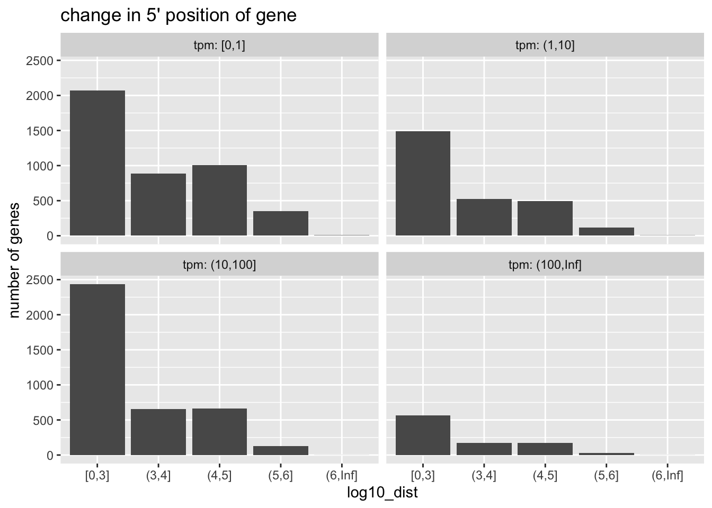
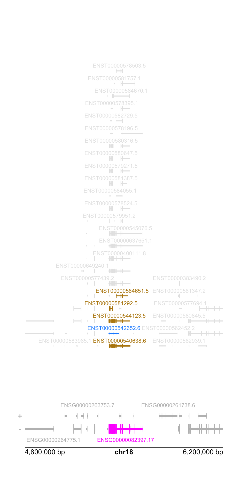

reference sequence hashes (think of a “barcode” that uniquely identifies the cDNA sequences) can be used to identify the provenance and release information of annotation
tximeta uses reference sequence hashes embedded in metadata files provided with Salmon (Patro et al. 2017) quantification output to automatically attach genomic range information, transcript-to-gene mapping, and genome build information to SummarizedExperiments. This is done automatically, on behalf of the user, without needing to specify the provenance or release numbers used during quantification. tximeta can also be used in combination with de novo transcriptomes or less common transcriptomes (see Love et al. (2020) or package vignette).
When data is summarized to the gene level, tximeta by default uses the genes() function to locate the genes in the genome. This provides a genomic range which starts with the leftmost position of any isoform and ends with the rightmost position of any isoform. This however may not be a good representation of the locus of transcription.
In this chapter, we explore an alternative way to assign ranges in tximeta’s summarization step, which is based on isoform abundance. We use plyranges and plotgardener packages to explore the differences between these two options for range assignment.
Data description: the macrophage package provides Salmon quantification files for a set of 24 RNA-seq samples from Alasoo et al. (2018). Data for six female human donors is available in the package, with gene expression at baseline, after IFN-gamma stimulation, after exposure to Salmonella, and after a combination of the two treatments. We won’t focus on the design of the experiment itself, but we will use transcript-level quantification data to explore the differences between the two range assignment options.
The following code chunk creates a coldata table describing the samples.
library(macrophage)library(dplyr)library(tximeta)dir <-system.file("extdata", package="macrophage")coldata <-read.csv(file.path(dir, "coldata.csv")) %>%mutate(files =file.path(dir, "quants", names, "quant.sf.gz"),condition =factor(condition_name),condition =relevel(condition, "naive")) %>%select(files, names=sample_id, condition, line_id) %>%slice(1:4) # subset to a few samplescoldata %>% dplyr::select(-files)
assignRanges='abundant': gene ranges assigned by isoform abundance
see details at: ?summarizeToGene,SummarizedExperiment-method
summarizing abundance
summarizing counts
summarizing length
Note that these two steps provide identical counts, abundance, etc. They only differ by their rowRanges.
all.equal(assay(gse_default), assay(gse))
[1] TRUE
We can now compare the 5’ location of the ranges using the two approaches.
library(plyranges)# plyranges to locate the 5' start using default approachdefault_5p <- gse_default %>%rowRanges() %>%anchor_5p() %>%mutate(width=1) %>%start()
Pull out information from the SummarizedExperiment: the average abundance over the samples, and the absolute distance between the 5’ start of the new and the old approach.
gene_dat <- gse %>%rowRanges() %>%anchor_5p() %>%mutate(width=1) %>%mutate(ave_tpm =rowMeans(assay(gse, "abundance")),dist =abs(start - default_5p))# how many genes have same 5' start?table(gene_dat$dist ==0)
FALSE TRUE
11775 46519
While most genes have the same 5’ start, a good number have changed their start position.
We can summarize the extent of changes by gene expression:
library(ggplot2)gene_dat %>%as_tibble() %>%filter(dist >0) %>%mutate(log10_dist =cut(log10(dist),breaks=c(0,3:6,Inf),include.lowest=TRUE),tpm =cut( ave_tpm,breaks=c(0,1,10,100,Inf),include.lowest=TRUE) ) %>%group_by(log10_dist, tpm) %>%tally() %>%ggplot(aes(log10_dist, n)) +geom_col() +ggtitle("change in 5' position of gene") +ylab("number of genes") +facet_wrap(~tpm, labeller=label_both)

Considerations:
The isoform-abundance based representation of the gene is likely a much more accurate description of the locus of transcription than the total gene extent.
The isoform-abundance 5’ start can be very far away from the total gene extent 5’ start.
Gene-level summary is an incomplete representation of transcription, and perhaps it may be better to perform analysis on the transcript level, e.g. DTE (see swish in fishpond package or catchSalmon/catchKallisto in edgeR) or DTU (see DEXSeq, satuRn, diffSplice in limma package, Segers et al. (2023), or the rnaseqDTU workflow).
We conclude this chapter by diagramming the difference between the two approaches for a single gene, using plotgardener (Kramer et al. 2022).
We begin by building a custom genome assembly for plotgardener functions. Note the use of tximeta::retrieveDb to pull the exact TxDb used in quantification of the data for representation of the ranges in the plots.
library(plotgardener)library(org.Hs.eg.db)# retrieves the correct TxDb/EnsDb for use in plots, etc.txdb <- tximeta::retrieveDb(gse)new_assembly <-assembly(Genome ="hg38",TxDb = txdb,OrgDb = org.Hs.eg.db,gene.id.column ="GENEID",display.column ="GENEID",BSgenome =NULL)
We pick a random gene with a large distance and high expression:
pageCreate(width =5, height =10, showGuides =FALSE, default.units ="inches")plotGenes(params = par, x =0.5, y =9, width =4, height =1,geneHighlights = gene_hilite)plotTranscripts(params = par, x =0.5, y =7, width =4, height =10,transcriptHighlights = txp_hilite, fill="grey90")plotGenomeLabel(params = par, x =0.5, y =9, length =4,just =c("left", "top"))

Alasoo, Kaur, Julia Rodrigues, Subhankar Mukhopadhyay, Andrew J. Knights, Alice L. Mann, Kousik Kundu, Christine Hale, Gordon Dougan, Daniel J. Gaffney, and H. I. P. S. C. I. Consortium. 2018. “Shared Genetic Effects on Chromatin and Gene Expression Indicate a Role for Enhancer Priming in Immune Response.”Nature Genetics 50 (3): 424–31. https://doi.org/10.1038/s41588-018-0046-7.
Kramer, Nicole E, Eric S Davis, Craig D Wenger, Erika M Deoudes, Sarah M Parker, Michael I Love, and Douglas H Phanstiel. 2022. “Plotgardener: cultivating precise multi-panel figures in R.”Bioinformatics 38 (7): 2042–45. https://doi.org/10.1093/bioinformatics/btac057.
Love, Michael I., Charlotte Soneson, Peter F. Hickey, Lisa K. Johnson, N. Tessa Pierce, Lori Shepherd, Martin Morgan, and Rob Patro. 2020. “Tximeta: Reference sequence checksums for provenance identification in RNA-seq.”PLOS Computational Biology 16: e1007664. https://doi.org/10.1371/journal.pcbi.1007664.
Patro, Rob, Geet Duggal, Michael I. Love, Rafael A. Irizarry, and Carl Kingsford. 2017. “Salmon Provides Fast and Bias-Aware Quantification of Transcript Expression.”Nature Methods. https://doi.org/10.1038/nmeth.4197.
Segers, Alexandre, Jeroen Gilis, Mattias Van Heetvelde, Elfride De Baere, and Lieven Clement. 2023. “Juggling Offsets Unlocks RNA-Seq Tools for Fast Scalable Differential Usage, Aberrant Splicing and Expression Analyses.”bioRxiv. https://doi.org/10.1101/2023.06.29.547014.
Soneson, Charlotte, Michael I. Love, and Mark Robinson. 2015. “Differential analyses for RNA-seq: transcript-level estimates improve gene-level inferences.”F1000Research 4. https://doi.org/10.12688/f1000research.7563.1.